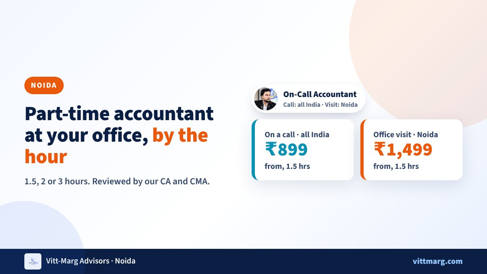

Most small businesses in Noida do not need an accountant for eight hours a day. They need someone who can sit at the office for a few hours a week, finish the Tally entries, file GST on time and leave the books clean. Hiring a full-time person for that is expensive, and a freelance accountant often disappears when you need them most.

The Vitt-Marg On-Call Accountant solves this. You book one of our salaried accountants by the hour, and they come to your office anywhere in Noida. Every session is checked by our CA and CMA before we close it.
How an office visit works
- Book: choose "Office visit", pick 1.5, 2 or 3 hours, tell us the work and your office address.
- Confirm: we call you, fix a slot, usually the next working day, and share the fixed price.
- Visit: the accountant works on your own computer and Tally or Zoho. Nothing leaves your office.
- Summary: you get a short WhatsApp note of what was done and what is due next.
Price by the hour
| Session | On a call (anywhere in India) | Office visit (Noida) |
|---|---|---|
| 1.5 hours | ₹899 | ₹1,499 |
| 2 hours | ₹1,099 | ₹1,799 |
| 3 hours | ₹1,499 | ₹2,399 |
GST is extra. Visit prices include travel inside Noida. You pay after we confirm the slot.
What usually fits in each slot
| Slot | Typical work |
|---|---|
| 1.5 hours | One month's GSTR-1 and GSTR-3B, or one bank account reconciled for a month |
| 2 hours | GST and TDS for the month, or around 100 Tally entries |
| 3 hours | Month-end closing with a one-page summary, payroll with PF and ESI, or a few weeks of backlog |
What to keep ready before the accountant arrives
- Sales and purchase bills for the period, in one folder or on the system.
- Bank statements in Excel or PDF.
- A computer with Tally, Zoho or Busy, and a user login for the accountant.
- Your GST and TDS portal access, which you enter yourself. We never ask for passwords on chat.
Is it cheaper than hiring?
A full-time accountant in Noida typically costs ₹20,000 to ₹30,000 a month in salary, plus PF, leave and a laptop. If your work needs two visits of 3 hours a month, that is ₹4,798 plus GST. Even weekly visits stay well below one salary, and the work is reviewed by a CA and a CMA.
We visit offices in every Noida sector, including Sector 62 and 63, Sector 57 to 60, Phase 1 and Phase 2, and the Hosiery Complex. See our Sector 63 and Phase 2 pages for the local businesses we work with.
Free tools: check your tax with our income tax calculator (old vs new regime, FY 2026-27), and see every due date in the monthly compliance calendar.
Frequently asked questions
How much does a part-time accountant cost in Noida?
With the Vitt-Marg On-Call Accountant, an office visit costs ₹1,499 for 1.5 hours, ₹1,799 for 2 hours and ₹2,399 for 3 hours, plus GST, with travel inside Noida included.
Do you visit every sector of Noida?
Yes. Office visits are available across Noida, including Sector 62, 63, 57 to 60, Phase 1, Phase 2 and the Hosiery Complex.
Will the same accountant come every time?
As far as possible, yes. Each client gets a named accountant who keeps notes on the books, so the next visit starts where the last one ended.
Is the work checked?
Yes. Every session is reviewed by our Chartered Accountant or Cost Accountant before we send the summary.
How Vitt-Marg helps
Book a qualified Vitt-Marg accountant by the hour: on a phone or video call from anywhere in India, or at your office in Noida. Tap the On-Call Accountant button at the bottom-right of this page to choose call or visit and the hours.
General information, current as of 22 November 2026, not advice for a specific case. Notifications and rules change often, so check with us before acting on it.